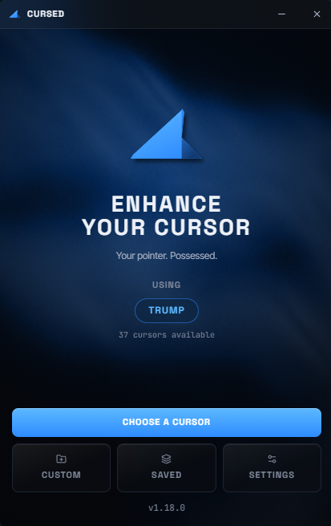
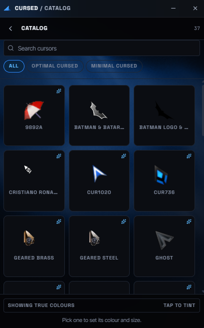
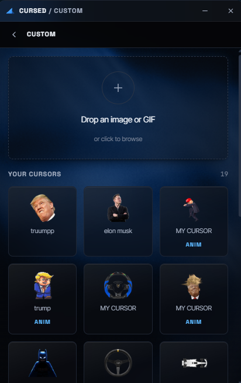
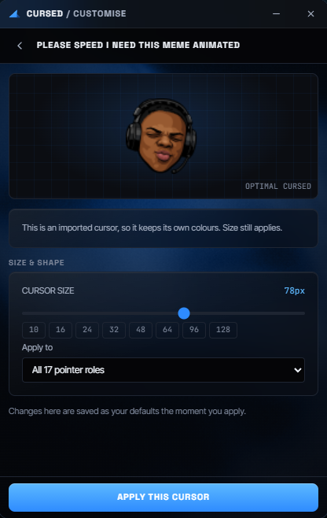

Windows 10 & 11 · Free · No account
YOUR POINTER. POSSESSED.
Replace all seventeen Windows pointer roles with a real cursor scheme — or drop in any image and turn it into one. No overlay. No added input latency.
Move your pointer around this page — it changes as you go.
See it
The whole app is four screens
No dashboard, no wizard, no sign-in. Open it, pick a cursor, close it — it keeps running in the tray.
{kind=link}

{kind=link}

{kind=link}

{kind=link}

How it works
Three steps, then forget it exists
-
01
Pick a cursor
Hover a tile and it previews on your actual pointer, live. Click to apply. Nothing is downloaded — every pack is already in the installer.
-
02
Or make your own
Drop a PNG, JPEG or GIF. The background is removed, the hotspot is found, and you get a real .cur or .ani in about a second.
-
03
It stays put
Windows resets pointers on theme changes and updates. A watchdog notices and puts yours back, so the choice survives.
Anything is a cursor
Yes, really anything
These are real cursors, built by the app from ordinary images. Backgrounds removed automatically, rendered at eight sizes so they stay sharp.
- Sharp Vector artwork renders at 10, 16, 24, 32, 48, 64, 96 and 128 px into one multi-resolution file. Photographs are sharpened in proportion to how far they were shrunk, because a good downscale filter is a blur by design.
- All 17 roles Most packs draw an arrow and a hand; the rest are filled from a plain built-in base. You never end up with a custom pointer and a stock Windows hourglass the moment your PC copies a file.
- No latency Every cursor is a real file registered with Windows, drawn by the graphics card's hardware cursor plane — the same path Windows uses for its own arrow. An overlay window would trail your pointer by a frame or two, forever.
Questions
The things people ask
Is it really free?
Yes. No paid tier, no trial, no licence key, no advertising, no account. The source is public under the MIT licence, so none of that has to be taken on trust.
Windows says "Windows protected your PC". Is it safe?
That is SmartScreen warning you the installer is not code-signed yet — a reputation warning shown to all new unsigned software, not a detection of anything harmful. Select More info, then Run anyway. You can verify your download against the published checksums, and build it yourself from source if you would rather.
Does it collect anything about me?
No. No telemetry, no analytics, no crash reporting, no fingerprinting. Your settings, presets and imported cursors live in a folder on your own machine and never leave it. The only network request the app can make is checking GitHub for a new version, and that can be switched off.
Will it slow my mouse down?
It cannot. Cursed never draws a cursor — it tells Windows which cursor to draw, and Windows renders it on the hardware cursor plane. Tools that paint a sprite in an always-on-top window are composited by the desktop compositor and trail the real pointer by 8–33 ms on any hardware. That is the reason this app is built the way it is.
Do my cursors work in games?
In anything that uses the normal Windows pointer, yes — browsers, Office, File Explorer, most windowed games. A fullscreen game that draws its own crosshair from raw input is drawing its own crosshair; nothing outside that game can change it without injecting code into it, which Cursed will never do.
What happens when I uninstall?
Every pointer role is restored to the exact value it had before install, and the registry entries, cursor schemes, startup entry and the WebView2 cache go with it. You are asked whether to keep your presets and custom cursors. A script in the repository verifies all of that before each release.
Does it need administrator rights?
No, and it never will. Everything is per-user: the install goes under your own profile and only HKCU is written. There is no UAC prompt at any point, including updates.
Which Windows do I need?
Windows 10 version 1803 or newer, or Windows 11. That floor is not ours to move: the app's window is Microsoft Edge WebView2, and Microsoft ended WebView2 support for Windows 7, 8 and 8.1. Builds ship for x64, ARM64 and 32-bit.
Download
Get Cursed
Download for WindowsFree. No account, no telemetry.
Not an x64 PC, or no internet on it?
- ARM64 — Snapdragon and Copilot+ laptops, Surface Pro X. Runs native instead of emulated.
- 32-bit — older PCs running 32-bit Windows, which cannot run the x64 build at all.
- Offline installer — x64 with the Edge WebView2 runtime built in (~211 MB). For an air-gapped machine or a network that blocks Microsoft's download.
- Version
- See above
- Platform
- Windows 10 (1803+) / 11
- Architecture
- x64, ARM64, 32-bit
- Install
- Per-user, no admin
- Cursors
- 36 packs × 17 roles
- Licence
- MIT
Verify your download against the checksums published with the release: SHA256SUMS.txt